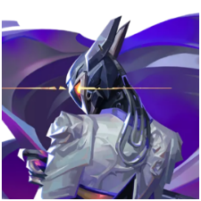

5대5 캐릭터기반
전술 슈팅 게임
전술 슈팅 게임
첫 라운드에 들어가기에 앞서, 요원 선택을 만나게 됩니다. 현재 선택 가능한
요원은 24명이며, 모든 요원은 각자의 기능에 따라 각기 다른 네 가지 역할군으로
나뉩니다. 신규 계정일 경우 모든 요원이 잠금 해제되어 있지는 않지만, 더 많이
플레이할수록, 더 빠르게 요원을 잠금 해제할 수 있습니다!
타격대
척후대
감시자
전략가
역할군 선택
타격대
타격대는 공격적인 역할을 수행하는 요원입니다. 주로 적을 처치하고 전투에서
앞장서는 역할을 합니다. 능력들이 적을 공격하거나 생존력을 높여주는 효과를
가지고 있습니다. 주로 소총 등의 공격 무기와 함께 플레이됩니다.
척후대
척후대는 적의 위치를 파악하고 전투를 시작하는 역할을 수행하는 요원입니다.
주로 적을 포착하고 정보를 제공하며, 팀원들에게 전투에 참여할 수 있는 기회를 만들어줍니다. 능력들이 적의 위치를 공개하거나 적을 둔화시키는 효과를 가지고 있습니다. 주로 투척 무기나 권총 등을 사용하여 전투를 시작합니다.
주로 적을 포착하고 정보를 제공하며, 팀원들에게 전투에 참여할 수 있는 기회를 만들어줍니다. 능력들이 적의 위치를 공개하거나 적을 둔화시키는 효과를 가지고 있습니다. 주로 투척 무기나 권총 등을 사용하여 전투를 시작합니다.
감시자
감시자는 팀원들을 보호하고 지역을 안전하게 유지하는 역할을 수행하는
요원입니다. 주로 함정을 설치하거나 팀원들을 치유하고 보호하는 능력을
가지고 있습니다.
감시자는 팀의 생존력과 방어력을 높여줍니다. 주로 치유기나 감시 장치 등을 사용하여 팀원들을 보호합니다.
감시자는 팀의 생존력과 방어력을 높여줍니다. 주로 치유기나 감시 장치 등을 사용하여 팀원들을 보호합니다.
전략가
전략가는 지역을 제어하고 적의 움직임을 방해하는 역할을 수행하는
요원입니다. 주로 장애물을 설치하거나 특정 지역을 통제하는 능력을 가지고
있습니다.
지휘자는 팀의 움직임과 전략에 큰 영향을 줄 수 있습니다. 주로 연막탄이나 지뢰 등을 사용하여 지역을 제어합니다.
지휘자는 팀의 움직임과 전략에 큰 영향을 줄 수 있습니다. 주로 연막탄이나 지뢰 등을 사용하여 지역을 제어합니다.
요원 소개
타격대
네온
필리핀 출신 요원 네온은 엄청난 속도로 달리며 몸에서
만들어낸 생체 전기를 빠르게 방출시킨다. 네온은 빠르게 움직여 방심한 적을 기습하고, 번개보다 빠르게 제압한다.
만들어낸 생체 전기를 빠르게 방출시킨다. 네온은 빠르게 움직여 방심한 적을 기습하고, 번개보다 빠르게 제압한다.
레이나
멕시코 중심부에서 태어난 레이나는 일대일 전투에
탁월하며 적을 처치할 때마다 강력해집니다.
그녀의 능력은 온전히 전투 실력에만 좌우됩니다.
탁월하며 적을 처치할 때마다 강력해집니다.
그녀의 능력은 온전히 전투 실력에만 좌우됩니다.
레이즈
브라질에서 온 레이즈는 화끈한 성격으로 커다란 총기를 휘두릅니다. 그녀의
저돌적인 전투 스타일은 엄폐 중인
적을 몰아내는 데 적합하며 대량의 폭발물로 좁은 지역을 초토화합니다.
적을 몰아내는 데 적합하며 대량의 폭발물로 좁은 지역을 초토화합니다.
척후대
게코
로스앤젤레스 출신 게코는 무시무시한 봇 생명체들을
이끕니다. 봇들이 돌진해 적들을 분산시키면 게코가 따라가 전열을 재정비한 후 다시 공격을 개시합니다.
이끕니다. 봇들이 돌진해 적들을 분산시키면 게코가 따라가 전열을 재정비한 후 다시 공격을 개시합니다.
브리치
스웨덴 출신의 생체병기 브리치는 강력한 역학적 폭발을 이용해 적진을
돌파합니다. 브리치의 강력한 피해량과
교란술은 아군이 굳이 '공정한' 전투를 할 필요가 없게
만들죠.
교란술은 아군이 굳이 '공정한' 전투를 할 필요가 없게
만들죠.

소바
겨울이 끝없이 이어지는 러시아 툰드라 지대에서 온
소바는 적들을 추적하고 발견하는 능력이 뛰어나며 정밀하면서도 무자비하게 적을 섬멸합니다. 직접 제작한 활과 뛰어난 정찰 스킬은 숨어 있는 적도 놓치지 않습니다.
소바는 적들을 추적하고 발견하는 능력이 뛰어나며 정밀하면서도 무자비하게 적을 섬멸합니다. 직접 제작한 활과 뛰어난 정찰 스킬은 숨어 있는 적도 놓치지 않습니다.
감시자
데드록
노르웨이 출신 요원 데드록은 최첨단 나노와이어를
배치해 전장의 위협적인 공격을 막아냅니다. 누구도
데드록의 감시를 피할 수도, 집요한 공격에서
살아남을 수도 없습니다.
배치해 전장의 위협적인 공격을 막아냅니다. 누구도
데드록의 감시를 피할 수도, 집요한 공격에서
살아남을 수도 없습니다.
바이스
강철 장인 바이스는 액체 금속을 사용하여 적을 고립시키고, 함정에 빠뜨리고,
무력화합니다. 그 간계와 술수를 본 적들은 전장 자체를 두려워하게 됩니다.

사이퍼
걸어 다니는 감시망이라고도 할 수 있는 모로코 출신의 정보 브로커 사이퍼는
적의 움직임과 정보를 끊임없이 감시합니다. 어떤 비밀이나 속임수를 감추고
있든 끈질기고
날카로운 사이퍼의 시선을 피할 방법은 없습니다.
날카로운 사이퍼의 시선을 피할 방법은 없습니다.
전략가
바이퍼
미국 출신 화학자 바이퍼는 다양한 화학 무기로 전장을
장악하고 적의 시야를 차단합니다. 화학 공격으로부터
살아남는다고 해도 바이퍼의 심리전에 놀아날 뿐입니다.
장악하고 적의 시야를 차단합니다. 화학 공격으로부터
살아남는다고 해도 바이퍼의 심리전에 놀아날 뿐입니다.
브림스톤
미국 출신 브림스톤은 궤도 무기를 활용해 아군에게 유리하도록 전투를
이끕니다. 안전하고 정확하게 다양한 수단으로 팀을 보조하는 능력 덕분에 그는
최고의 야전 사령관으로 불립니다.

아스트라
가나 출신 요원 아스트라는 우주의 힘을 활용해 전장을
장악합니다. 천상계 형상 능력과 전략적 통찰력 덕분에
상대보다 몇 수는 앞설 수 있죠.
장악합니다. 천상계 형상 능력과 전략적 통찰력 덕분에
상대보다 몇 수는 앞설 수 있죠.